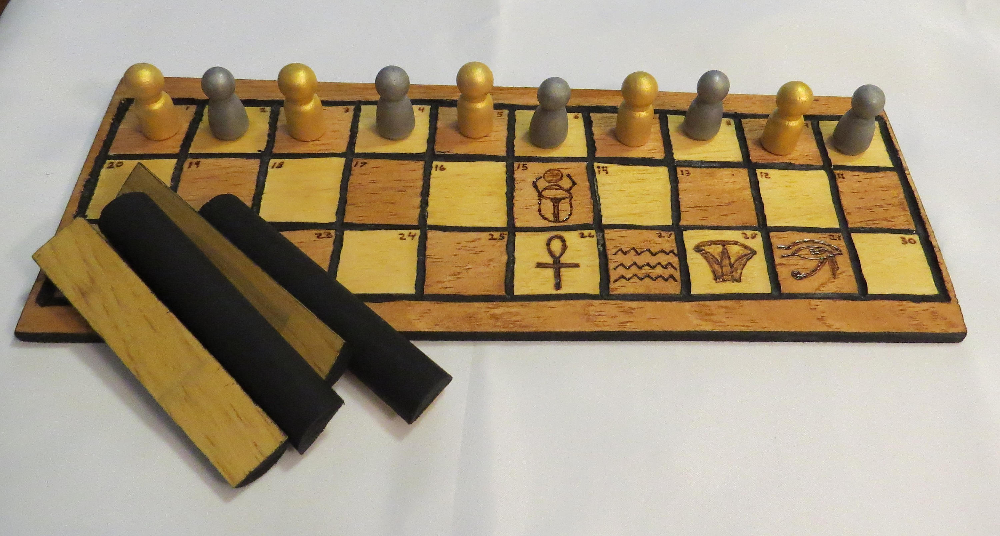

On this page we give a brief history on the ancient board games.
Senet is a board game from ancient Egypt. The oldest senet game dates back to around 3100 BC. A hieroglyph resembling a senet board game appears in the tomb of Merknera(3300-2700 BC). Senet was played by people in other cultures. It probably came to those places through trade relationships between Eqyptians and local people.
How to play:

The Royal Game of Ur, is a two-player strategy race board game that was first played in ancient Mesopotamia during the early third millennium BC. At the height of its popularity, the game acquired spiritual significance, and events in the game were believed to reflect a player's future and convey messages from deities or other supernatural beings.
How to play:

Mancala is one of the oldest known games to still be widely played today. Mancala is a generic name for a family of two-player turn-based strategy board games played with small stones, beans, or seeds and rows of holes or pits in the earth, a board or other playing surface. The objective of the game is usually to capture all or some set of the opponent's pieces. Versions of the game date back to the 7th century, and evidence suggests the game existed in ancient Egypt.
How to play:
| Board Game | Location | Year |
|---|---|---|
| Senet | Egypt | 3100 BC |
| The Royal Game of Ur | Mesopotamia | Early third millennium BC |
| Mancala | Egypt | 7th century |